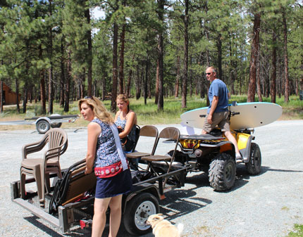
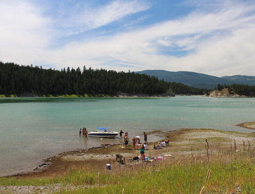
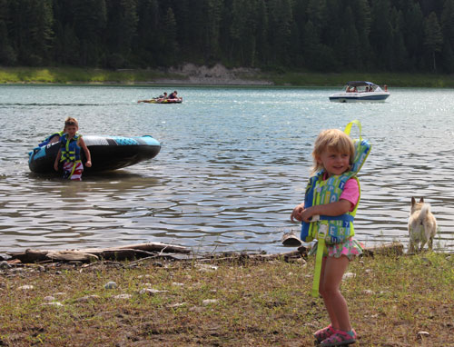
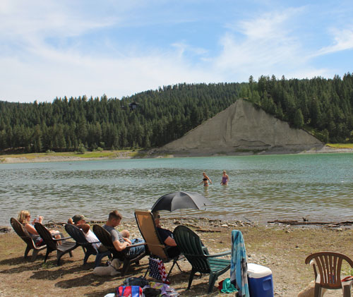
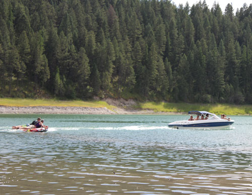
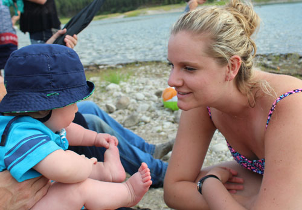
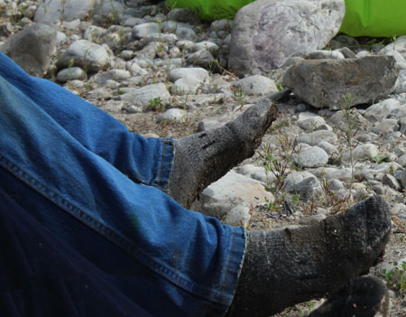
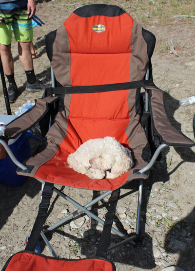
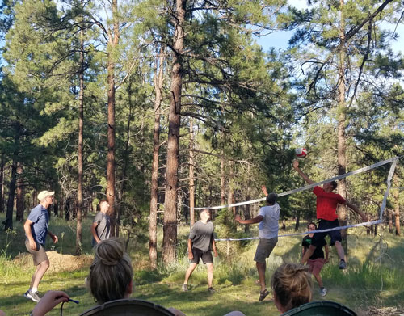

July 4, 2017
| Eric was in OKC for this holiday, so we have no
pictures of his festivities. I spent the day with his family and
only took a few shots, but hopefully they capture the essence of a great
holiday celebrated with family. |
|
 |
 |
| Larry rigged up this VIP transportation system to get us down to the lake. | Our private portion of Lake Koocanusa, just below Eric's parents' house. |
 |
 |
| Colt on the left and Lily toward the right. And Gus too, of course. | Casazzas spectating |
 |
 |
| Dillon was on leave from the Navy so him and his dad decided to do
some tubing. It was Mark's first time to drive the boat, so they were pretty brave! |
Hunter being admired by the lovely Katie. |
 Grandpa Dan got hot and went into the water - jeans, wool socks, and all! |
 |
| I had my awesome chair with attached footstool so of course, Carson assumed I'd brought it for him. And this was after he rolled in a dead deer! |
|
 |
|
| After a big meal and some ladder ball, there were several rounds of
volleyball. The old guys took on all comers and spanked them all. I think they pulled a few muscles in the process, but we won't go into that! |
|